Muroran
Muroran · Hokkaido
Muroran
Highlighted on the Hokkaido map.
Stay
ワークマンハウス室蘭駅前
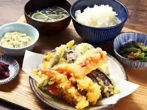
Waakumanhausu Muroran Ekimae
室蘭プリンスホテル
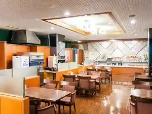
Muroran Purinsuhoteru
第二プリンスホテル 室蘭ビュー
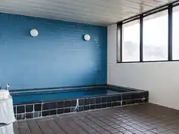
Daini Purinsuhoteru Muroran Byuu
むろらん仲間の家
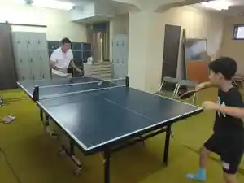
Muroran Nakama No Ie
ホテル室蘭ヒルズ 輪西駅前 ＢＢＨホテルグループ
Hoteru Muroran Hiruzu Wanishi Ekimae B B H Hoteruguruupu
室蘭ユースホステル
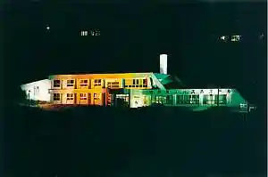
Muroran Yuusuhosuteru
金政旅館
Kinsei Ryokan
室蘭エコナハウス
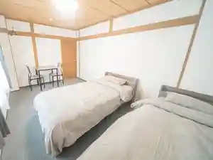
Muroran Ekonahausu
ホテルルートインＧｒａｎｄ室蘭
Hoteruruutoin G R A N D Muroran
ホテルニューバジェット室蘭
Hoterunyuubajietto Muroran
アパホテル〈室蘭〉
Apahoteru < Muroran >
虎杖浜天然温泉 ホテルルートイン東室蘭駅前
Itadori Hama Tennen Onsen Hoteruruutoin Higashimuroran Ekimae
Dining
四季ダイニング和薫
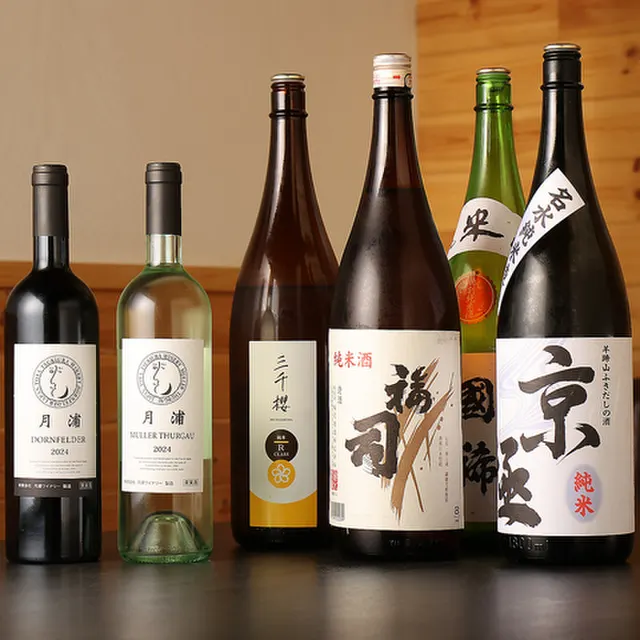
Shiki Dainingu Wa Kaoru
海鮮ビアホール汽笛
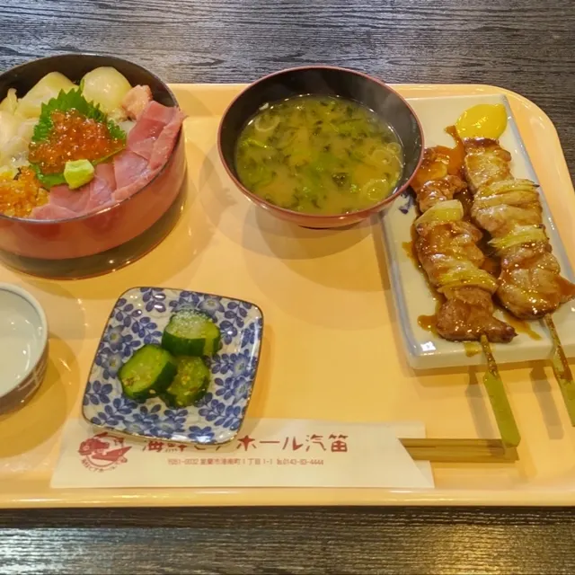
Kaisen Biahooru Kiteki
Dapasu
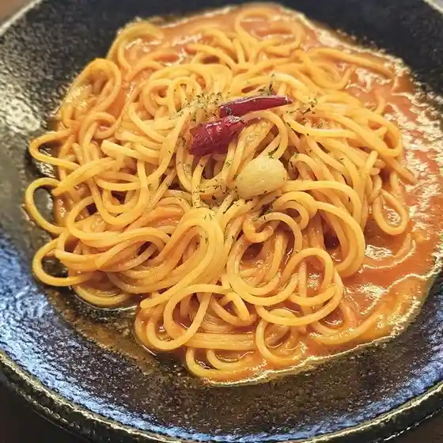
Dapasu
白木屋 東室蘭ドンキホーテ前店

Shirokiya Higashimuroran Donkihoote Mae Mise
焼鳥 吉田屋
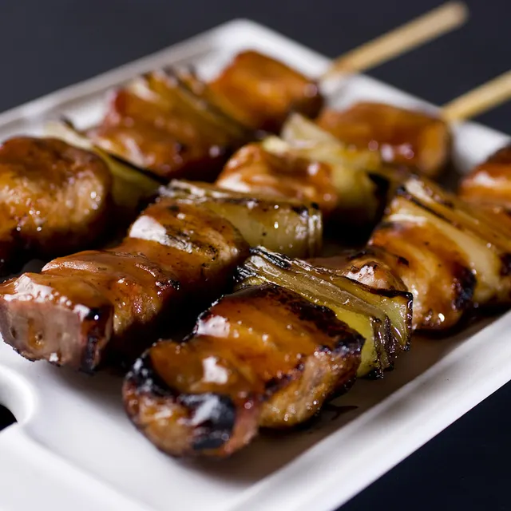
Yakitori Yoshidaya
魚民 東室蘭中島町店
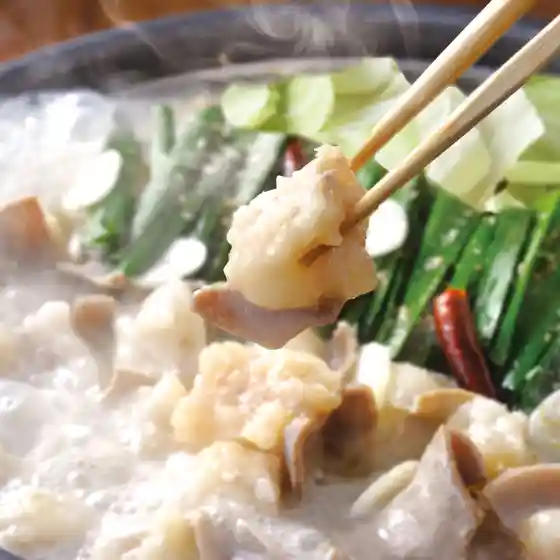
Uotami Higashimuroran Nakajima Machi Mise
大衆焼肉 昭和園
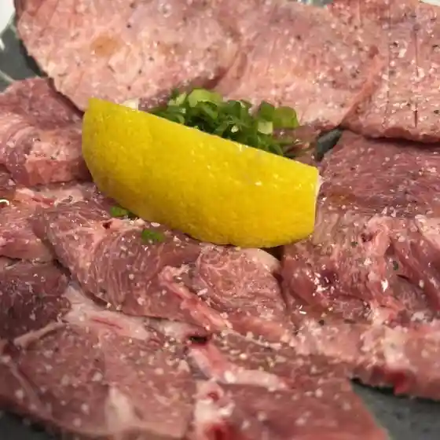
Taishuu Yakiniku Shouwa Sono
ニュー ルンビニ
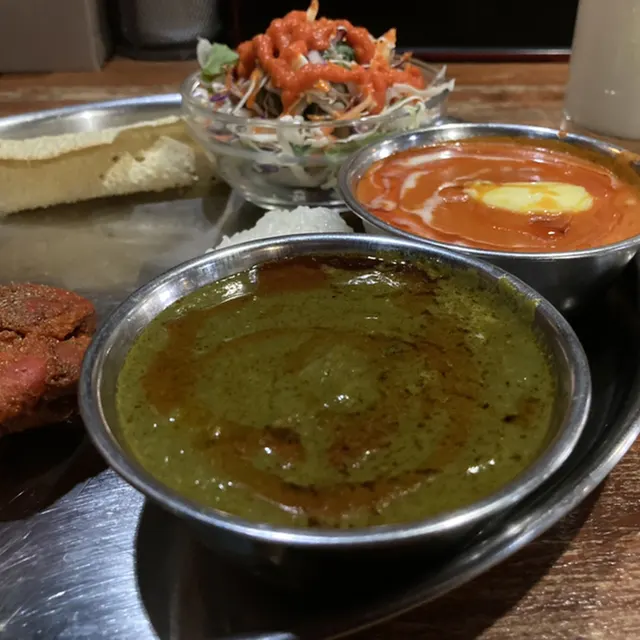
Nyuu Runbini
Crown Restaurant Bar STRIVE
Crown Restaurant Bar Strive
炭火焼 ひさし
Sumibi Yaki Hisashi
伊勢広
Ise Kou
絆
Kizuna
ちゅーな
Chuuna
よかばい
Yokabai
CHIKYU KITCHEN
Chikyu Kitchen
たまみ屋食堂
Tamami Ya Shokudou
結衣の茶屋
Yui No Chaya
すき家 37号室蘭中島店
Suki Ie 37 Goushitsu Ran Nakajima Mise
ブーランジェリー フェリシテ
Buuranjierii Ferishite
鉄ノ街珈琲
Tetsu No Machi Koohii
漫賊
Man Zoku
キッチンはせがわ
Kitchin Hasegawa
シャトレーゼ 東室蘭店
Shatoreeze Higashimuroran Mise
まじ亭
Maji Tei
Sights
Chikyumisaki
Chikyumisaki